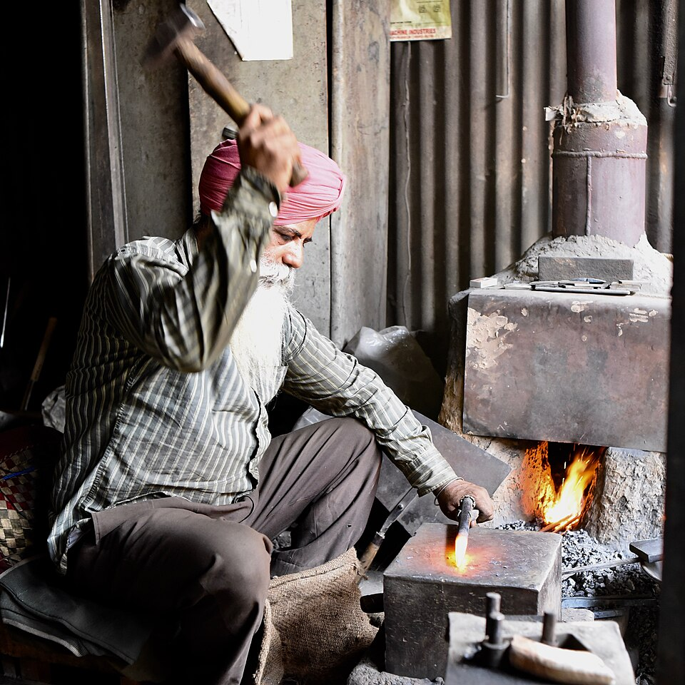

Hi Gaia, Welcome to Your CPE Masterclass!
With your exam approaching at the end of the month, today we target the highest tier of English: mastering six elite syntactic blueprints and executing a full, timed Cambridge speaking examination.
1. Six High-Leverage C2 Structures
Cleft sentences, passive reporting, participle clauses, inversion with not only, concessive while clauses, and advanced conditionals.
2. Full 3-Part CPE Speaking Paper
Complete simulation of Part 1 (Interview), Part 2 (4-Min Collaborative Visual Task), and Part 3 (2-Min Individual Prompt Card Long Turn + Extended Abstract Discussion).
3. The A.R.E.A. Speaking Strategy
The professional framework for Part 3 Extended Discussion: Assertion, Reason, Evidence, and Alternative/Amplification to answer with effortless academic poise.
Cleft Sentences (Emphasis & Focus)
Breaks monotonous Subject-Verb-Object rhythms and gives instant rhetorical weight to your core argument.
Structural Formations
What + Clause + BE + Focus Element
"What fundamentally elevates this performance is its emotional nuance."
It is/was + Focus + that/who + Clause
"It is precisely this architectural harmony that enchants visitors."
Baseline: Early artistic education fundamentally shapes a child's cognitive flexibility and creative instincts.
Objective: Rewrite beginning with "What fundamentally shapes..."
Baseline: Unchecked commercial development erodes civic heritage, not genuine lack of public interest.
Objective: Transform using "It is not so much... as it is... that..."
Passive Reporting Verbs & Impersonal Stance
Replaces informal statements like "people think" or "they say" with authoritative academic distance.
Structural Formations
It is + Past Participle + that...
widely maintained / asserted / contended / acknowledged
Subj + BE + Participle + to + V1
"The policy is believed to offer significant benefits."
Subj + BE + Participle + to have + V3
"The ancient library is thought to have housed thousands of scrolls."
Baseline: Many scholars believe that continuous digital connectivity shortens our collective attention spans.
Objective: Rephrase using "It is increasingly contended that..."
Baseline: Experts think this traditional craft technique originated in Renaissance Venice during the sixteenth century.
Objective: Front with the craft technique: "This artisanal craft is thought..."
Participle Clauses (Syntactic Density)
Eliminates choppy, repetitive compound sentences by condensing cause, consequence, and chronology.
Structural Formations
Clause, thereby + Verb-ing
"...pedestrianised the square, thereby fostering civic life."
Having + Past Participle (V3)...
"Having endured years of austerity, the arts scene revived."
Past Participle (V3) + by/with...
"Galvanised by public demand, the council acted."
Baseline: The municipal authority created an extensive cycleway network. As a direct result, it curtailed carbon emissions and reduced commuter stress.
Objective: Combine into a single sentence using ", thereby + -ing".
Baseline: The candidate spent two decades in investigative journalism, so she approached political debate with deep skepticism.
Objective: Front the sentence with "Having spent..."
Negative & Correlative Inversion (Not Only...)
Creates rhetorical grandeur and displays flawless syntactic command under exam pressure.
Structural Formations
Not only + Aux/Modal + Subj + Verb, but (also)...
Notice: Question-order auxiliary syntax (does / did / can / has / will).
Rarely / Seldom / Under no circumstances...
"Rarely do policymakers foresee the cultural ramifications of rapid automation."
Baseline: A four-day working week boosts employee productivity. It also drastically reduces workplace burnout.
Objective: Begin the sentence with "Not only does a compressed working schedule..."
Baseline: The restoration project preserved the cathedral's Gothic facade, and it revived tourism across the entire district.
Objective: Front with "Not only did the restoration..."
While Concession Clauses (Dialectical Balance)
Proves intellectual maturity by acknowledging the counter-perspective before firmly proving your thesis.
Structural Formations
While it is undeniable that [Counter], [Thesis] remains...
"While technological efficiency is prized, human judgment remains irreplaceable."
While proponents of X contend that..., the empirical reality is...
Alternative C2 connectors: Whilst / Whereas / Granted that.
Baseline: Remote work offers genuine flexibility, but it undeniably risks isolating individuals from spontaneous social collaboration.
Objective: Formulate a balanced C2 concession sentence beginning with "While..."
Baseline: Modern high-rises maximise commercial capacity, but they frequently destroy the human scale and aesthetic spirit of historic cities.
Objective: Structure a high-level concession highlighting aesthetic consequences.
Advanced Conditionals & Inversions
Replaces repetitive 'if' sentences with inverted subjunctives and sophisticated mixed time-frames.
Structural Formations
Had + Subj + (not) + V3...
"Had the committee acted sooner, the crisis would have been averted."
Were + Subj + to-V1 / Were it not for...
"Were it not for subsidies, the gallery would collapse."
If + Past Perfect, Subj + would + V1
"If they had protected the wetlands, we would not face flooding today."
Baseline: If the state had not subsidised independent cinema, many art-house theatres would have vanished entirely.
Objective: Invert without "if" using "Had it not been for..."
Baseline: The government didn't invest in youth apprenticeships ten years ago, so our manufacturing sector suffers a chronic skills shortage right now.
Objective: Formulate a Mixed Conditional connecting that past failure to today's crisis.
The Cambridge C2 Speaking Test Breakdown (3 Parts · 16 Mins)
Total duration: ~16 minutes · Assessed in pairs by two examiners (Interlocutor & Assessor).
Conversational warm-up. General questions regarding your background, studies, worldview, and personal interests. Shows social poise.
Two-stage collaborative task using visual photographs: a 1-minute initial reaction on 1–2 photos, followed by a 3-minute evaluation and decision task across all photos.
Written prompt card with a central question and 3 optional bullet-point ideas. Speak uninterrupted for 2 full minutes, followed by a brief response from your partner.
In-depth philosophical and societal questions broadening the Part 3 card theme. Powered by the A.R.E.A. method and C2 syntactic mastery.
The 5 Cambridge C2 Assessment Dimensions:
Syntactic range & precision
Collocations & register
Coherence & fluency
Stress, rhythm & intonation
Turn-taking & reacting
Social Interaction & Spontaneous Fluency
Aim for conversational spontaneity, personal authenticity, and natural linguistic range without pausing.
Studies, Ambition & Intellectual Passions
- • What field of study or intellectual pursuit has had the most enduring influence on how you view the world?
- • Do you prefer immersing yourself in theoretical concepts or practical, hands-on challenges?
Language, Culture & Global Perspective
- • How has mastering multiple languages reshaped the way you formulate your thoughts?
- • If you could spend six months immersed in any cultural community worldwide, where would you go?
Leisure, High Culture & Solitude
- • In an era of non-stop digital notifications, how do you cultivate genuine mental stillness?
- • What role do you think the visual or performing arts play in sustaining emotional well-being?
Everyday Life & Future Outlook
- • What is one daily ritual or habit that you consider non-negotiable for your peace of mind?
- • Looking ahead to the next five years, what personal milestone are you most determined to achieve?
Part 2 Collaborative Task: Demanding Pursuits
Two-stage visual collaboration: first react to Pictures 1 & 2 for 1 minute, then evaluate all three pictures together for 3 minutes to reach a decision.
"First, look at Pictures 1 and 2. Talk together about the kind of personal discipline and psychological resilience each pursuit demands."
 Picture 1
Picture 1
The Symphony Conductor / Orchestra
High-stakes stage performance. Collective synchronisation, intense mental stamina, public vulnerability.
 Picture 2
Picture 2
The Solo Mountain Climber
Ascending vertical precipice in isolation. Sheer physical endurance, confronting fear, zero margin for error.

Picture 3The Master Blacksmith & Metal Artisan
Forging red-hot iron by hand on the anvil beside an open hearth. Raw physical stamina, enduring extreme heat, preserving ancestral craftsmanship.
Part 3 Long Turn: Written Prompt Card & Idea Map
Speak uninterrupted for 2 full minutes on the central prompt card question below. Click any idea node to anchor your points as you speak.
How might these initiatives help cities remain vibrant and sustainable for future generations?
The A.R.E.A. Formula for Part 3 Extended Discussion
How to construct sophisticated, well-proportioned answers to the examiner's follow-up abstract questions without hesitating or rambling.
Assertion
Deliver a direct, unequivocal thesis answering the core prompt immediately. No filler or hesitation.
Reason
Explain the underlying mechanism or principle. Why does this phenomenon happen?
Evidence / Example
Anchor your point with a tangible societal precedent, cultural observation, or historical case.
Alternative / Amplification
Weigh the counter-reality (*Were this not so...*), concede nuance (*While...*), or examine consequences (*thereby...*).
"Well, I think old buildings are very important because people like looking at them. In my city there are many historical houses and tourists come, so if we destroy them it's bad."
"What architectural preservation fundamentally safeguards is civic continuity. While commercial developers argue for higher yields, had European cities flattened their medieval cores, they would have forfeited their cultural soul, thereby diluting local identity."
Part 3 (Stage B): Philosophical Discussion Prompts
Deploy the A.R.E.A. structure while integrating today's six C2 grammatical blueprints.
"To what extent does rapid urbanisation risk eroding a community's sense of collective cultural identity?"
[A - Assertion]: "What rapid urbanisation imperils most acutely is the tangible continuity of shared civic memory."
[R - Reason]: "It is widely acknowledged that when generic glass architecture supplants historic neighbourhoods, citizens forfeit the physical anchors of their heritage."
[E - Evidence]: "Consider several major Asian and European metropolises that dismantled their ancient districts in pursuit of hyper-density."
[A - Alternative / Amplification]: "While modernisation is essential for economic expansion, were planners to neglect vernacular architecture, cities would become indistinguishable monocultures, thereby severing the link between generations."
"Some argue that high culture—such as opera, classical theatre, and public galleries—should be funded exclusively through private patrons rather than public taxation. What is your view?"
[A - Assertion]: "I firmly reject the proposition that high culture should be left to the whims of wealthy benefactors."
[R - Reason]: "Not only does state sponsorship democratise access for citizens regardless of socioeconomic background, but it also insulates artistic experimentation from commercial pressure."
[E - Evidence]: "The National Theatre and continental European art institutions demonstrate that public subsidisation sustains cutting-edge work that purely commercial venues would deem financially perilous."
[A - Alternative]: "Had it not been for public subventions, transformative cultural movements would have been stifled in their infancy."
Your Cambridge C2 Speaking Blueprint
Keep these 4 golden rules in mind as you head into the final preparation phase for the exam.
Dynamic Visual Collaboration (Part 2 · 4 Mins)
Never waste precious seconds describing surface visual details. In the 1-minute warm-up and 3-minute decision task, speculate analytically and invite your partner's view every 20–25 seconds ("In all likelihood, the conductor is grappling with...").
Own the 2-Minute Prompt Card (Part 3 · Stage A)
Treat the three bullet points on your card as optional springboards, not a rigid checklist. Pace your 2-minute turn across an opening thesis, two contrasted angles, and a wider societal reflection.
Deploy 3–4 Deliberate Syntactic Shifts
You don't need forced archaic vocabulary. Examiners give top marks to candidates who comfortably use clefts ("What strikes me..."), inversions ("Not only does..."), and participle clauses ("..., thereby creating...").
The A.R.E.A. Formula for Part 3 Extended Discussion
Assertion → Reason → Evidence → Alternative/Amplification. This guarantees your extended discussion turns are structured, intellectually grounded, and authoritative.
"C2 Proficiency is not about speaking faster; it is about speaking with deliberate composure, structural elegance, and rhetorical purpose. You have the linguistic toolkit—now own the room!"